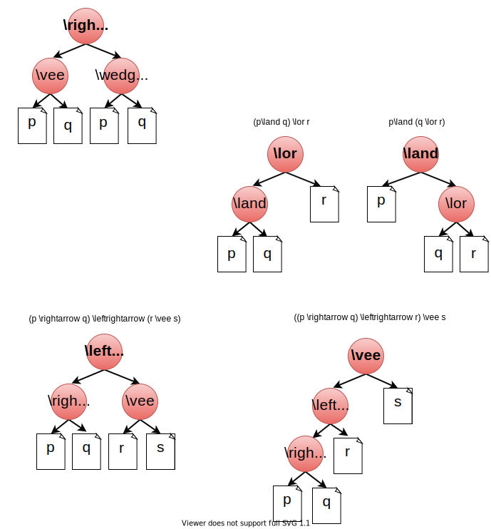

Frank de Alcantara - junho 2020
$p=$ Sílvia é professora.
$q=$ Sílvia é professora.
Considerando estas duas proposições vamos fazer a tabela Verdade para: $ p\land q $,$ \neg (p\land q) $, $ \neg p \lor \neg q $.
Como temos duas variáveis $p, q $ e três formulas: $ p \land q $,$ \neg (p\land q) $, $ \neg p \lor \neg q $ nossa tabela terá três colunas e $2^2$ linhas, além da linha de título. Sendo assim:
| $p$ | $q$ | $ p \land q $ | $ \neg (p\land q) $ | $ \neg p \lor \neg q $ |
|---|---|---|---|---|
| $p$ | $q$ | $ p \land q $ | $ \neg (p\land q) $ | $ \neg p \lor \neg q $ |
|---|---|---|---|---|
| $T$ | $T$ | |||
| $T$ | $F$ | |||
| $F$ | $T$ | |||
| $F$ | $F$ |
| $p$ | $q$ | $ p \land q $ | $ \neg (p\land q) $ | $ \neg p \lor \neg q $ |
|---|---|---|---|---|
| $T$ | $T$ | $T$ | $F$ | $F$ |
| $T$ | $F$ | |||
| $F$ | $T$ | |||
| $F$ | $F$ |
| $p$ | $q$ | $ p \land q $ | $ \neg (p\land q) $ | $ \neg p \lor \neg q $ |
|---|---|---|---|---|
| $T$ | $T$ | $T$ | $F$ | $F$ |
| $T$ | $F$ | $F$ | $T$ | $T$ |
| $F$ | $T$ | |||
| $F$ | $F$ |
| $p$ | $q$ | $ p \land q $ | $ \neg (p\land q) $ | $ \neg p \lor \neg q $ |
|---|---|---|---|---|
| $T$ | $T$ | $T$ | $F$ | $F$ |
| $T$ | $F$ | $F$ | $T$ | $T$ |
| $F$ | $T$ | $F$ | $T$ | $T$ |
| $F$ | $F$ |
| $p$ | $q$ | $ p \land q $ | $ \neg (p\land q) $ | $ \neg p \lor \neg q $ |
|---|---|---|---|---|
| $T$ | $T$ | $T$ | $F$ | $F$ |
| $T$ | $F$ | $F$ | $T$ | $T$ |
| $F$ | $T$ | $F$ | $T$ | $T$ |
| $F$ | $F$ | $F$ | $T$ | $T$ |
| $p$ | $q$ | $\neg(p \land q)$ | $p( \uparrow q )$ | $ (\neg p \lor \neg q) $ |
|---|---|---|---|---|
| $T$ | $T$ | $F$ | $F$ | $F$ |
| $T$ | $F$ | $T$ | $T$ | $T$ |
| $F$ | $T$ | $T$ | $T$ | $T$ |
| $F$ | $F$ | $T$ | $T$ | $T$ |
$ \neg(p \land q) \equiv (p \uparrow q) \equiv (\neg p \lor \neg q) $
| $p$ | $q$ | $\neg(p \lor q)$ | $ (p \downarrow q) $ | $ (\neg p \land \neg q) $ |
|---|---|---|---|---|
| $T$ | $T$ | $F$ | $F$ | $F$ |
| $T$ | $F$ | $F$ | $F$ | $F$ |
| $F$ | $T$ | $F$ | $F$ | $F$ |
| $F$ | $F$ | $T$ | $T$ | $T$ |
$ \neg(p \lor q) \equiv (p \downarrow q) \equiv (\neg p \land \neg q) $
| $p$ | $q$ | $(p \veebar q)$ | $ (p \lor q) \land \neg (p \land q) $ |
|---|---|---|---|
| $T$ | $T$ | $F$ | $F$ |
| $T$ | $F$ | $T$ | $T$ |
| $F$ | $T$ | $T$ | $T$ |
| $F$ | $F$ | $F$ | $F$ |
$ (p \lor q) \land \neg (p \land q) \equiv (p \leftrightarrow q) \equiv (p \land \neg q) \lor (\neg p \land q) $
Serão representadas por letras maiúsculas $P, Q, R, T$
Todas as variáveis proposicionais são fórmulas proposicionais.
Se $P$ e $Q$ são fórmulas proposicionais então $\neg P$, $\neg Q$, $(P \land Q)$, $(P \lor Q)$, $(P \rightarrow Q)$ e $(P \leftrightarrow Q)$ também são.
Nada mais é uma Fórmula Proposicional
A sintaxe de uma fórmula bem formatada será determinada pelos conectivos que já vimos (não, ou, e,...).
A semântica será determinada pela Verdade da fórmula. Ou, ser preferir, pelo valor-Verdade.
Para encontar a Verdade de uma fórmula usamos a Tabela Verdade como ferramenta de cálculo.
Para encontrar a Verdade de uma fórmula, repetimos o mesmo procedimento que utilizamos para preencher as tabelas Verdade até o momento. Primeiro, preechemos todas as combinações possíveis de entrada de acordo com as nossas variáveis, depois, vamos preenchendo as colunas de acordo com as fórmulas.
Lembre-se que o número de combinações possíveis será determinado por $2^n$ onde $n$ representa o número de variáveis.
Encontre Tabela Verdade para $P \equiv (p \rightarrow (q \lor r)) $
| $p$ | $q$ | $r$ | $(q \lor r)$ | $(p \rightarrow (q \lor r)) $ |
|---|---|---|---|---|
| $T$ | $T$ | $T$ | $ $ | $ $ |
| $T$ | $T$ | $F$ | $ $ | $ $ |
| $T$ | $F$ | $T$ | $ $ | $ $ |
| $T$ | $F$ | $F$ | $ $ | $ $ |
| $F$ | $T$ | $T$ | $ $ | $ $ |
| $F$ | $T$ | $F$ | $ $ | $ $ |
| $F$ | $F$ | $T$ | $ $ | $ $ |
| $F$ | $F$ | $F$ | $ $ | $ $ |
Encontre Tabela Verdade para $P \equiv (p \rightarrow (q \lor r)) $
| $p$ | $q$ | $r$ | $(q \lor r)$ | $(p \rightarrow (q \lor r)) $ |
|---|---|---|---|---|
| $T$ | $T$ | $T$ | $T$ | $ $ |
| $T$ | $T$ | $F$ | $T$ | $ $ |
| $T$ | $F$ | $T$ | $T$ | $ $ |
| $T$ | $F$ | $F$ | $F$ | $ $ |
| $F$ | $T$ | $T$ | $T$ | $ $ |
| $F$ | $T$ | $F$ | $T$ | $ $ |
| $F$ | $F$ | $T$ | $T$ | $ $ |
| $F$ | $F$ | $F$ | $F$ | $ $ |
Encontre Tabela Verdade para $P \equiv (p \rightarrow (q \lor r)) $
| $p$ | $q$ | $r$ | $(q \lor r)$ | $(p \rightarrow (q \lor r)) $ |
|---|---|---|---|---|
| $T$ | $T$ | $T$ | $T$ | $T$ |
| $T$ | $T$ | $F$ | $T$ | $T$ |
| $T$ | $F$ | $T$ | $T$ | $T$ |
| $T$ | $F$ | $F$ | $F$ | $F$ |
| $F$ | $T$ | $T$ | $T$ | $T$ |
| $F$ | $T$ | $F$ | $T$ | $T$ |
| $F$ | $F$ | $T$ | $T$ | $T$ |
| $F$ | $F$ | $F$ | $F$ | $T$ |
Vamos distribuir a tabela por operação, e colocar o resultado na coluna do operador.
| $(p$ | $ \lor $ | $q)$ | $\rightarrow$ | $(p$ | $ \land $ | $q) $ |
|---|---|---|---|---|---|---|
| $T$ | $T$ | $T$ | $T$ | $T$ | $T$ | $T$ |
| $T$ | $T$ | $F$ | $F$ | $T$ | $F$ | $F$ |
| $F$ | $T$ | $T$ | $F$ | $F$ | $F$ | $T$ |
| $F$ | $F$ | $F$ | $T$ | $F$ | $F$ | $F$ |
| Tabela Verdade | Árvore Verdade | |||||||||||||||||||||||||||||||||||
|
 |
| Tabela Verdade | Interpretação | |||||||||||||||||||||||||||||||||||
|
|
| Tabela Verdade | Interpretação | |||||||||||||||||||||||||||||||||||
|
|
Uma fórmula que não é TAUTOLOGIA nem CONTRADIÇÃO é denominada fórmula CONTINGENTE ou CONTINGÊNCIA.
Clique aqui abrir o material de suporte.